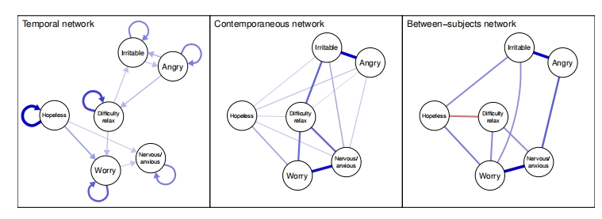
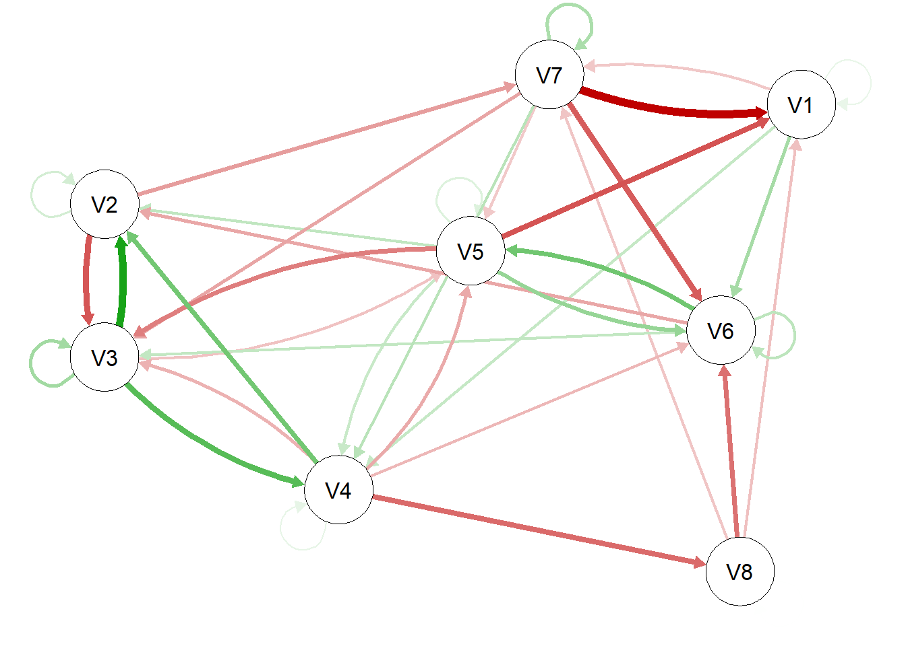
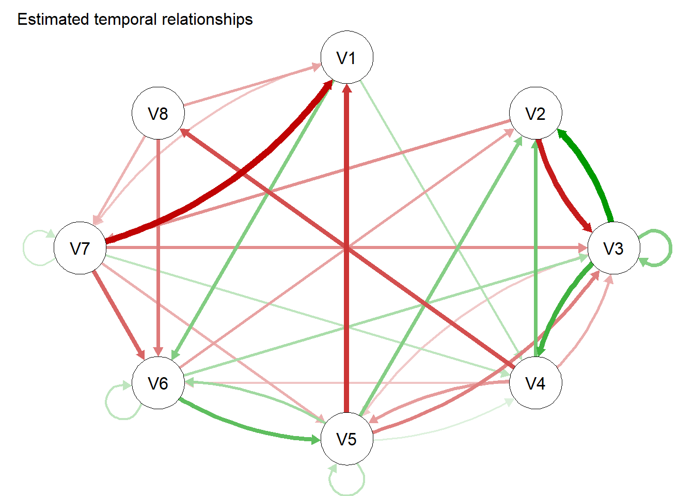
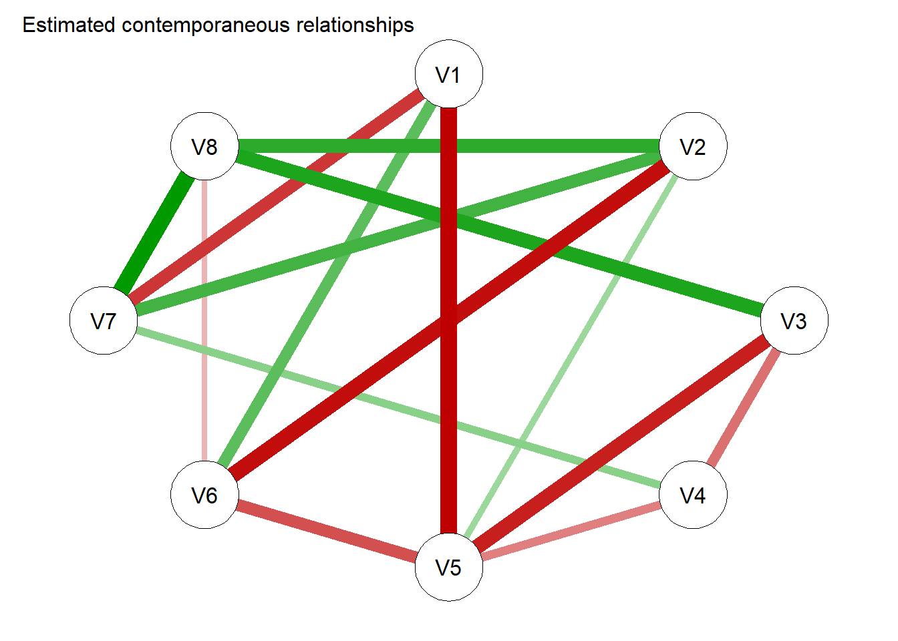
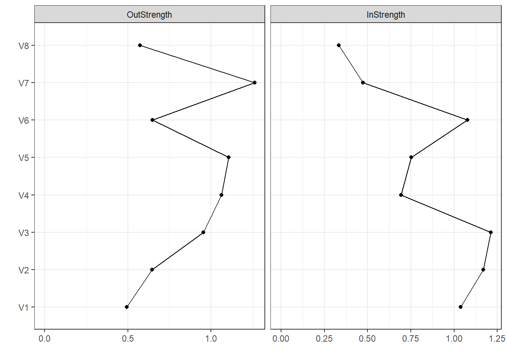
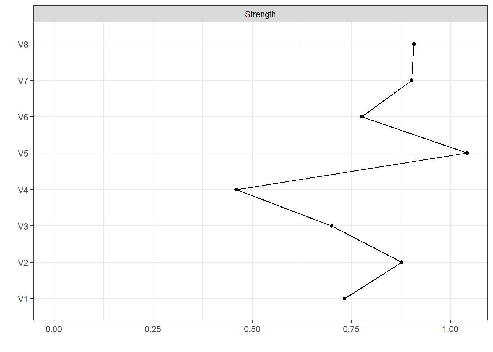
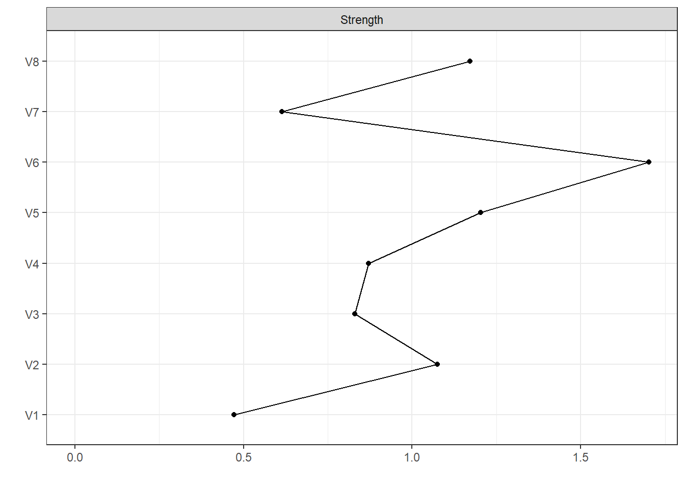

Model = mlVARsim(nPerson = 50,nNode = 8, nTime = 30, lag=1)时间网络分析
1 时间网络分析概述
1.1 几种数据类型
首先，从测量次数角度，我们要注意区分几种数据类型：单一测量数据（每人一个测量）、面板数据（许多人测量了几次）、N = 1时间序列数据（一个人测量了多次）和N > 1时间序列数据（几个人测量了多次）。
1.2 时间网络分析
时间网络分析（Temporal network analysis）是网络分析的最新进展之一，它将关系和时间维度结合到一个单一的分析框架中，即：时间网络，也称为时间序列网络、时变网络、动态网络或演化网络。
时间网络分析是一种新颖而具有前景的方法，它比其他更常用的纵向建模技术[如交叉滞后面板模型(CLPM)，回归模型]具有优势。
首先，时态网络分析中经常涉及到建立图形向量自回归(GVAR)模型，其允许估计考虑时间上个体内差异的有向网络，而CLPM没有分离个体内效应（within-person effects）和个体间效应（between-person effects），这可能导致变量之间因果关系的不正确结论。尽管后来发展起来的CLPM ——随机截距 CLPM可以将时间不变（time-invariant）、类似特质（trait-like）的个体间效应与个体内效应区分开来，但它需要更大的样本和更大的检验效能，特别是对于具有更多变量的更复杂的模型。
 {引用自WITH R NETWORK PSYCHOMETRICS=“” fig-align=“center”}
{引用自WITH R NETWORK PSYCHOMETRICS=“” fig-align=“center”}
其次，时间网络分析评估模型中每个变量的中心性，这可以识别网络中最重要的(或最有影响力的)节点。由于高度中心的节点影响网络中最多的变量，因此它们可能是干预的有用目标。
1.3 分析思路
时间网络分析还在发展之中，并不完善。对于N=1的时间序列网络分析，主要思想是通图形向量自回归模型（GVAR）进行处理；对于N>1的时间序列，可能会更多地考虑多层VAR（mlVAR包实现了这种统计建模方法）。
在VAR中，在连续的时间点之间使用线性回归来建模时间依赖关系，允许人们在控制了时间效应（同期效应）后，获得跨时间的关系（时间效应）和同一测量窗口中的关系的单独估计。VAR变体是这一部分的核心焦点是图形VAR（GVAR）模型，其中同时的效果被进一步建模为高斯图形模型。因此，GVAR模型返回两种网络结构：一个时间网络，这是一个时间关系的有向网络；一个同时网络，它是一个同时关系的无向网络。
1.4 工具包
可以实现上述几种时间序列数据网络分析的R包有多种，目前来看并不统一，单是我在各类文献中看到的工具包就不少，比如，有用时间社会网络分析（tsna）的，有用多水平向量自回归(mlVAR包，Multi-Level Vector Autoregression)的，也有用时变向量自回归包（mgm包）以及psychonetrics包（面板GVAR模型）……
虽然让人眼花缭乱，但底层逻辑是相似的，主要还是要看你的研究类型和目的。譬如，mlVAR会分离出以下三种网络：
{引用自WITH R NETWORK PSYCHOMETRICS=“” fig-align=“center”}
我在上述对应R包的名字上附上了具体文献或者代码仓库的超链接，你如果感兴趣的话，可以点进去看看这些文献对Temporal network analysis的具体实现方法。
个人比较推荐使用mlVAR构建时间序列网络模型。
2 R语言实战
2.1 准备数据
为了避免版本兼容性问题，大家可以先跳转到文末看看我使用的R语言环境。
先导入需要使用的程序包，没有安装的请先安装。
本次我们用mlVAR包的mlVARsim函数模拟一份数据(实际是拟合也了一个时间网络模型)，为了减轻电脑的计算负担，设置受试者人数为50，节点数为8个，测量次数是30，阶数lag为1，其它都是默认设置。
查看数据：
head(Model$Data) V1 V2 V3 V4 V5 V6 V7
1 2.0335217 3.157925 -3.876432 -4.733132 -2.543258 -0.6276040 1.4945052
2 2.2822126 3.732587 -4.179065 -1.685546 -2.404072 1.7619746 -0.1781815
3 1.5409651 2.615361 -2.934132 -3.383525 -1.873246 2.5694409 -3.4722245
4 0.6782198 3.847820 -1.470588 -5.984845 -2.705544 1.5355441 -0.9820712
5 3.8371249 3.970785 -1.777491 -2.959565 -3.943941 0.5437959 -1.6252762
6 3.0328899 1.786133 -1.560092 -1.860449 -2.511397 2.1500955 1.1310869
V8 ID
1 -8.729056 1
2 -7.772314 1
3 -6.317016 1
4 -6.868845 1
5 -6.163121 1
6 -5.477314 1查看节点名：
Model$vars[1] "V1" "V2" "V3" "V4" "V5" "V6" "V7" "V8"查看受试者变量：
Model$idvar[1] "ID"绘图：
plot(Model)
2.2 拟合模型
好戏开始：用mlVAR函数拟合时间网络模型！
这里面的data、vars、idvar是必须写的，分别表示数据、要分析的变量名、代表受试者的变量。lags可以选用默认参数，estimator是估计器，具体的选项可以查看帮助文档，这里选择lmer；contemporaneous（同期网络）、temporal（时序网络）估计方法都采用”correlated”；nCores指定使用的cpu核心数，计算量不小，可以适当大一些。
fit1 = mlVAR(data = Model$Data,
vars = Model$vars,
idvar = Model$idvar,
lags = 1,
estimator = "lmer",
temporal = "correlated",
contemporaneous = "correlated",
nCores = 8,
verbose =F
)总结模型：
summary(fit1)
mlVAR estimation completed. Input was:
- Variables: V1 V2 V3 V4 V5 V6 V7 V8
- Lags: 1
- Estimator: lmer
- Temporal: correlated
Information indices:
var aic bic
V1 3199.817 3527.135
V2 2934.493 3261.810
V3 3112.823 3440.141
V4 2840.875 3168.193
V5 2705.464 3032.781
V6 2985.371 3312.689
V7 3090.526 3417.844
V8 2959.122 3286.440
Temporal effects:
from to lag fixed SE P ran_SD
V1 V1 1 0.116 0.029 0.000 0.078
V1 V2 1 0.175 0.027 0.000 0.090
V1 V3 1 -0.515 0.041 0.000 0.216
V1 V4 1 -0.441 0.030 0.000 0.120
V1 V5 1 0.005 0.033 0.890 0.162
V1 V6 1 0.362 0.028 0.000 0.083
V1 V7 1 0.269 0.030 0.000 0.102
V1 V8 1 0.035 0.041 0.394 0.229
V2 V1 1 0.032 0.042 0.449 0.242
V2 V2 1 0.132 0.036 0.000 0.199
V2 V3 1 0.309 0.032 0.000 0.154
V2 V4 1 0.140 0.031 0.000 0.154
V2 V5 1 0.037 0.032 0.250 0.174
V2 V6 1 -0.384 0.039 0.000 0.229
V2 V7 1 -0.285 0.036 0.000 0.196
V2 V8 1 0.048 0.034 0.154 0.182
V3 V1 1 0.027 0.030 0.372 0.102
V3 V2 1 0.004 0.027 0.886 0.084
V3 V3 1 0.117 0.032 0.000 0.134
V3 V4 1 0.167 0.035 0.000 0.178
V3 V5 1 -0.265 0.025 0.000 0.082
V3 V6 1 -0.023 0.029 0.425 0.105
V3 V7 1 -0.038 0.027 0.159 0.064
V3 V8 1 0.332 0.029 0.000 0.109
V4 V1 1 0.050 0.036 0.168 0.180
V4 V2 1 -0.181 0.036 0.000 0.198
V4 V3 1 -0.022 0.039 0.573 0.208
V4 V4 1 0.255 0.039 0.000 0.224
V4 V5 1 0.184 0.038 0.000 0.219
V4 V6 1 0.161 0.038 0.000 0.208
V4 V7 1 -0.239 0.043 0.000 0.248
V4 V8 1 0.138 0.038 0.000 0.208
V5 V1 1 -0.022 0.029 0.448 0.106
V5 V2 1 0.392 0.026 0.000 0.077
V5 V3 1 -0.131 0.029 0.000 0.101
V5 V4 1 -0.024 0.026 0.351 0.088
V5 V5 1 0.055 0.028 0.049 0.122
V5 V6 1 0.027 0.030 0.369 0.129
V5 V7 1 0.043 0.031 0.162 0.134
V5 V8 1 -0.041 0.025 0.092 0.053
V6 V1 1 -0.023 0.033 0.492 0.141
V6 V2 1 -0.039 0.046 0.394 0.271
V6 V3 1 0.098 0.038 0.009 0.187
V6 V4 1 -0.066 0.034 0.055 0.170
V6 V5 1 0.167 0.040 0.000 0.227
V6 V6 1 0.009 0.040 0.820 0.212
V6 V7 1 -0.105 0.039 0.007 0.201
V6 V8 1 -0.018 0.039 0.639 0.211
V7 V1 1 -0.012 0.034 0.731 0.155
V7 V2 1 -0.016 0.027 0.554 0.092
V7 V3 1 0.019 0.035 0.582 0.168
V7 V4 1 0.251 0.029 0.000 0.119
V7 V5 1 0.183 0.026 0.000 0.097
V7 V6 1 -0.042 0.027 0.126 0.094
V7 V7 1 0.031 0.027 0.253 0.071
V7 V8 1 0.253 0.026 0.000 0.071
V8 V1 1 -0.072 0.042 0.087 0.226
V8 V2 1 -0.432 0.037 0.000 0.192
V8 V3 1 0.138 0.042 0.001 0.232
V8 V4 1 -0.027 0.040 0.493 0.219
V8 V5 1 0.219 0.038 0.000 0.216
V8 V6 1 -0.033 0.039 0.393 0.211
V8 V7 1 0.202 0.038 0.000 0.197
V8 V8 1 0.137 0.040 0.001 0.220
Contemporaneous effects (posthoc estimated):
v1 v2 P 1->2 P 1<-2 pcor ran_SD_pcor cor ran_SD_cor
V2 V1 0.000 0.000 -0.255 0.218 -0.237 0.243
V3 V1 0.761 0.999 -0.006 0.171 -0.031 0.186
V3 V2 0.351 0.302 0.042 0.184 -0.116 0.185
V4 V1 0.000 0.000 0.224 0.169 0.263 0.232
V4 V2 0.771 0.861 0.009 0.172 -0.039 0.218
V4 V3 0.451 0.683 -0.022 0.141 -0.063 0.204
V5 V1 0.013 0.002 -0.124 0.209 -0.060 0.236
V5 V2 0.000 0.000 0.194 0.203 0.275 0.217
V5 V3 0.000 0.000 -0.264 0.189 -0.335 0.219
V5 V4 0.000 0.000 0.182 0.239 0.193 0.286
V6 V1 0.000 0.000 0.177 0.084 0.060 0.172
V6 V2 0.000 0.000 0.287 0.215 0.306 0.212
V6 V3 0.000 0.000 -0.270 0.140 -0.321 0.146
V6 V4 0.000 0.001 -0.147 0.165 -0.108 0.234
V6 V5 0.038 0.005 0.089 0.131 0.214 0.188
V7 V1 0.104 0.161 0.063 0.173 0.204 0.165
V7 V2 0.610 0.653 0.020 0.171 -0.017 0.239
V7 V3 0.738 0.273 -0.026 0.137 -0.059 0.206
V7 V4 0.000 0.000 0.310 0.169 0.404 0.200
V7 V5 0.847 0.588 -0.006 0.156 0.131 0.267
V7 V6 0.008 0.013 -0.090 0.117 -0.078 0.157
V8 V1 0.000 0.000 0.166 0.146 0.220 0.171
V8 V2 0.406 0.858 0.023 0.189 0.047 0.284
V8 V3 0.954 0.405 -0.015 0.142 -0.124 0.216
V8 V4 0.586 0.979 0.010 0.123 0.230 0.206
V8 V5 0.000 0.000 0.202 0.125 0.260 0.207
V8 V6 0.311 0.312 0.039 0.153 0.075 0.227
V8 V7 0.000 0.000 0.344 0.149 0.414 0.163
Between-subject effects:
v1 v2 P 1->2 P 1<-2 pcor cor
V2 V1 0.282 0.811 0.080 0.155
V3 V1 0.038 0.067 0.240 0.251
V3 V2 0.958 0.467 -0.042 0.047
V4 V1 0.122 0.295 0.164 0.126
V4 V2 0.707 0.322 0.091 0.172
V4 V3 0.418 0.238 -0.131 -0.117
V5 V1 0.264 0.142 -0.161 -0.047
V5 V2 0.085 0.001 0.306 0.185
V5 V3 0.276 0.252 0.142 0.155
V5 V4 0.121 0.187 -0.187 -0.345
V6 V1 0.003 0.001 0.370 0.317
V6 V2 0.128 0.713 0.122 0.057
V6 V3 0.312 0.756 0.044 0.161
V6 V4 0.311 0.704 -0.091 -0.244
V6 V5 0.240 0.120 0.172 0.304
V7 V1 0.132 0.183 -0.179 -0.121
V7 V2 0.396 0.486 0.100 0.083
V7 V3 0.334 0.764 0.081 -0.038
V7 V4 0.036 0.036 0.261 0.349
V7 V5 0.177 0.072 -0.198 -0.280
V7 V6 0.290 0.685 -0.039 -0.215
V8 V1 0.312 0.134 0.148 0.139
V8 V2 0.001 0.001 0.378 0.362
V8 V3 0.326 0.624 0.090 0.027
V8 V4 0.121 0.029 0.225 0.407
V8 V5 0.127 0.399 -0.146 -0.239
V8 V6 0.000 0.017 -0.340 -0.344
V8 V7 0.902 0.974 -0.006 0.188上面给出了大量的信息。值得注意的是，mlVAR包会输出3种效应：Temporal effects、Contemporaneous effects、Between-subject effects，分别对应时序网络、同期网络和个体间网络。
Temporal effects（时间效应）：这是指变量在时间上对自身或其它变量的影响，这些效应通常是通过滞后回归权重来估计的，可以捕捉变量随时间的动态关系 。时序网络中的边是指变量在上个时间点t-1对下个时间点t的各节点的预测能力（控制了上个时间点t-1上的其他变量之后）。
Contemporaneous effects（同期效应）：这是指在相同时间点上变量之间的关系，可以是简单的相关关系或偏相关关系。这些关系通常是通过模型残差的相互关系来估计的，可以揭示在同一时间点上变量之间的直接联系 。
Between-subject effects（个体间效应）：这是指在不同个体之间（平均水平层面的）变量关系的差异，可以是相关关系或偏相关关系。这些效应反映了不同个体在变量关系上的差异，有助于理解不同个体在心理过程上的差异 。
2.3 可视化
我们可以分别绘制这些网络图：
# 同期网络
contemporaneous = plot(fit1, type = "temporal", title = "Estimated temporal relationships",
rule = "and",layout = "circle")'nonsig' argument set to: 'hide'
# 时序网络
temporal=plot(fit1, type = "contemporaneous", rule = "and",
title = "Estimated contemporaneous relationships", layout = "circle")'nonsig' argument set to: 'hide'
# 受试者间网络 必须取名between，否则报错
between = plot(fit1, type = "between", rule = "or",
title = "Estimated between relationships", layout = "circle")'nonsig' argument set to: 'hide'
2.4 计算中心性
可以跟横断面网络一样，计算或者开展后续一些常用的指标和检验，比如中心性，桥梁症状。
# 计算中心性
centrality(contemporaneous) $OutDegree
V1 V2 V3 V4 V5 V6 V7 V8
1.7626296 1.1175046 0.7645637 0.9034969 0.5231023 0.3698123 0.6865014 0.9912068
$InDegree
V1 V2 V3 V4 V5 V6 V7 V8
0.0000000 1.1805817 1.1909310 0.9991603 1.0172301 0.9069345 1.1013387 0.7226413
$Closeness
V1 V2 V3 V4 V5 V6 V7
0.03696362 0.00000000 0.00000000 0.00000000 0.00000000 0.00000000 0.00000000
V8
0.00000000
$Betweenness
V1 V2 V3 V4 V5 V6 V7 V8
0 11 6 0 1 0 2 6
$InExpectedInfluence
V1 V2 V3 V4 V5 V6
0.00000000 -0.04617963 -0.10094765 0.11654432 0.48700373 0.13880776
V7 V8
-0.15752989 0.72264128
$OutExpectedInfluence
V1 V2 V3 V4 V5 V6
-0.14918637 -0.22089092 0.23433731 0.06198312 0.26042372 0.16018255
V7 V8
0.68650135 0.12698916
$ShortestPathLengths
V1 V2 V3 V4 V5 V6 V7 V8
V1 0 5.700019 1.943257 2.265991 5.715231 2.763749 3.711177 4.954201
V2 Inf 0.000000 3.238940 7.165181 7.010914 2.603737 3.507118 6.249884
V3 Inf 5.325176 0.000000 5.976258 3.771974 7.928913 7.950482 3.010944
V4 Inf 5.516577 8.755517 0.000000 5.430191 6.209490 4.175626 7.270580
V5 Inf 2.552564 5.791503 9.717744 0.000000 5.156301 6.059682 8.802448
V6 Inf 8.558272 10.153397 13.525333 6.005709 0.000000 9.540629 13.164342
V7 Inf 6.267130 9.506069 3.984703 5.477571 8.870867 0.000000 3.952898
V8 Inf 2.314232 5.553172 8.924241 4.568496 4.917969 4.939537 0.000000
$ShortestPaths
V1 V2 V3 V4 V5 V6 V7 V8
V1 NULL NULL NULL NULL NULL NULL NULL NULL
V2 NULL NULL NULL NULL NULL NULL NULL NULL
V3 NULL NULL NULL NULL NULL NULL NULL NULL
V4 NULL NULL NULL NULL NULL NULL NULL NULL
V5 NULL NULL NULL NULL NULL NULL NULL NULL
V6 NULL NULL NULL NULL NULL NULL NULL NULL
V7 NULL NULL NULL NULL NULL NULL NULL NULL
V8 NULL NULL NULL NULL NULL NULL NULL NULL可以将其绘制出来，下面的代码依次绘制同期网络、时序网络和个体间网络。
centralityPlot(contemporaneous) 
centralityPlot(temporal)
centralityPlot(between)
完全可以对绘图函数的参数做些个性化调整，这里不多展示了。
2.5 桥梁症状分析
先人为对模拟数据的节点进行分组：
groups=c(rep('A',4),rep('B',2),rep('C',2))计算桥梁中心性指标：
b = bridge(contemporaneous, communities= groups, directed=F)
b$`Bridge Strength`
V1 V2 V3 V4 V5 V6 V7 V8
0.6312836 0.6691977 0.5972349 0.7222251 0.5231023 0.2033041 0.4335224 0.7887587
$`Bridge Betweenness`
V1 V2 V3 V4 V5 V6 V7 V8
5 1 1 5 0 1 2 3
$`Bridge Closeness`
V1 V2 V3 V4 V5 V6 V7
0.14014223 0.10893181 0.12090457 0.13274157 0.08197854 0.13031448 0.11021654
V8
0.12678535
$`Bridge Expected Influence (1-step)`
V1 V2 V3 V4 V5 V6
0.631283628 -0.669197749 0.067008531 0.243254960 0.260423716 -0.006325689
V7 V8
0.433522386 -0.075458952
$`Bridge Expected Influence (2-step)`
V1 V2 V3 V4 V5 V6
0.51172975 -0.76244179 0.24764776 0.32814244 0.25875117 0.03340721
V7 V8
0.50311573 0.02808020
$communities
[1] "A" "A" "A" "A" "B" "B" "C" "C"简单绘图：
plot(b, include=c("Bridge Expected Influence (2-step)", "Bridge Strength", "Bridge Closeness"),
theme_bw=F, raw0 = T, signed=T) Warning: Vectorized input to `element_text()` is not officially supported.
ℹ Results may be unexpected or may change in future versions of ggplot2.
3 几个需要注意的地方
时间网络分析目前还不完善，上述流程并没有覆盖到之前我们做横断面网络的所有评估指标和检验方法，比如稳定性、精确性、差异性检验，我还没有找到合适的R包可以很方便地对其进行分析（估计得自己写重抽样代码）。
此外，时间网络分析不同于CLPM网络分析，其对数据有一些要求，比如说测量次数多、满足多元正态分布、具备平稳性……
你如果有一份生态瞬时数据或者密集追踪数据，且想要进行时间网络分析，建议在建模前检查下数据，包括正态性（不服从也可以做）、平稳性（KPSS平稳性检验，文献提到可以用R包tseries实现，要一个个做，所以代码有些复杂），等等。
运行环境
{r}
sessionInfo()}